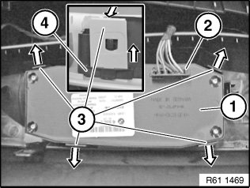

61 31 204 Replacing Switch Combination for Seat Adjustment
61 31 204 Replacing Switch Combination For Seat Adjustment

Necessary preliminary tasks:
- Remove outer cover on front seat

Disconnect plug connection (2).
Unlock retaining tabs (3) in direction of arrow and remove switch combination (1) from cover.
Installation:
Retaining tabs (3) of cover and guide (4) of switch combination (1) must not be damaged.
Make sure switch combination (1) is correctly seated in retaining tabs (3).